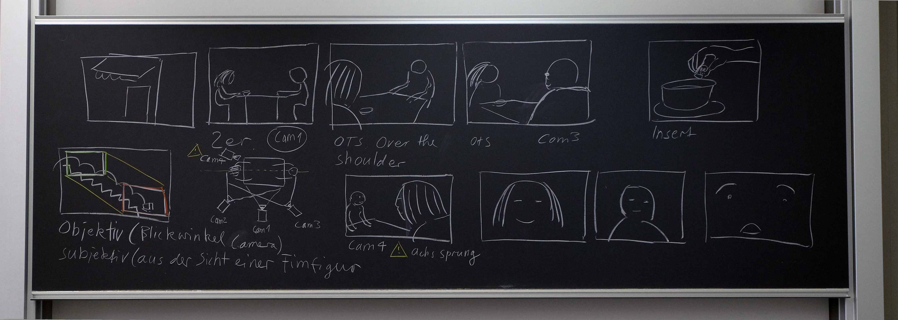
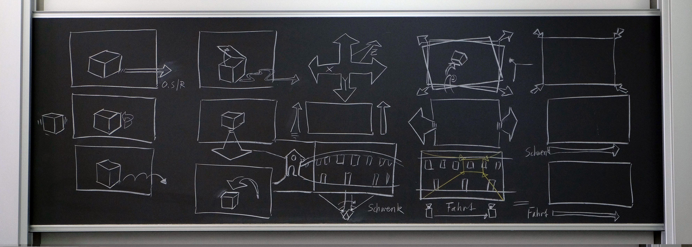
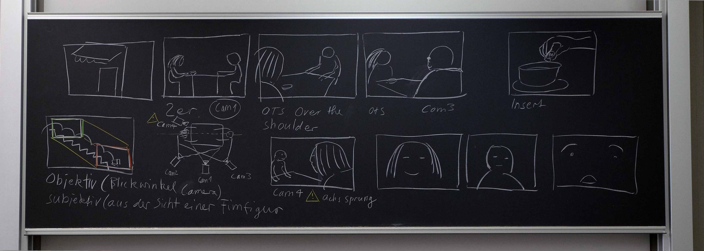
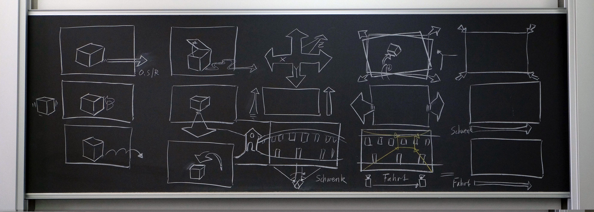

Zurück in die Schule – Ein neues Kapitel beginnt. Eine meiner ersten
Unterrichtsstunden, zurück hinter der Schulbank, war das Fach «Experimentelles Erzählen».
Ich hatte keine Vorstellung, was mich erwartet und freute mich auf eine neue Erfahrung.
Mein erster Eindruck vom Unterrricht:
Die zweite Übung, die wir im Unterricht erarbeiteten hiess: Die lebende Fotokamera.
Die Aufgabe bestand darin, in der Gruppe eine Reihe an Bildern zu sammeln, und dazu
eine Geschichte zu basteln. Jeder aus der Gruppe war einmal die Kamera und wurde
mit geschlossenen Augen vor eine Situation geführt.
Ein Tippen auf die Schulter löste die «menschliche Kamera» aus und das Erfasste musste auf ein kleines Dia gemalt werden.
Danach kreierten wir die Geschichte dazu und gaben sie der nächsten Gruppe weiter. Diese erfasste zu den gleichen Dias
ihre Version der Geschichte. Am Schluss wurden alle Geschichten vorgelesen und mit dem Orginal verglichen.
Sehr intressant war, dass einige Schlüsselbilder, wie eine Explosion oder Gitterstäbe, von allen gleich aufgefasst wurden.
Experimentelles Erzählen hat eine grosse Spannweite. Ich empfinde es als eine hilfreiche Art,
die Kreativität anzuregen. Man lernt, einfach mal loszulassen und nicht zu viel zu überlegen,
was mir immer sehr schwer viel. Ich durfte viele gute Übungen kennenlernen, die die
Kreativität anregen, vor allem in der Gruppe.
Ein gutes Beispiel dafür war die Aufgabe «Das Game». Aus einem kurzen Zeitungsartikel erschufen wir
in der Gruppe ein Spiel. Wir entwarfen die Handlung, den Protagonisten, das Ziel und die Art des Spiels.
Alles sollte auf dem Inhalt des Zeitungsartikels basieren. Bei unserem Artikel handelte es sich um ein Baby,
das von den Eltern in einem Taxi vergessen ging. Wir tauften unser Spiel: BABYRUNNER. Der Start des Spiels
würde das Intro mit der Vorgeschichte zeigen, bis das Baby aus dem Taxi krabbelt und sich auf den Hochhäusern der
Stadt auf den Weg macht. Die Aufgabe des Spielers ist es, das Baby unversehrt zurück zu seinen Eltern zu bringen.
Mit verschiedenen Gegenständen bewahrt man unser Baby vor dem Fall. Stürzt es trotzdem, hat man insgesamt 7 Kissen, die das Baby auffangen,
bevor es zu einem Restart des ganzen Spiels kommt.
Die Fragestellung der Unterrichtsstunde war:

Auch im theoretischen Bereich habe ich einiges gelernt bei Basil. Da die Filme seine Passion sind, konnte er uns
viel über Storyboards beibringen. Dies zu beherrschen ist wichtig, wenn man einen Werbefilm plant oder die Handlung
einer Geschichte im Vorfeld skizzieren möchte. Es gibt einige Insider-Regeln, die man besser kennt, wenn man mit
Personen in dieser Branche zusammenarbeitet. Ansonsten wird die Kommunikation schwer.
Die Storyboards waren ein interessanter Abstecher in ein Thema, dem ich mich bis jetzt noch nicht gewidmet habe.
Aber wer weiss, wann man dies brauchen kann.
 



© Sina Obitsch – IAD 19